NASA World Wind
Java provides next-generation 3-D virtual globe technology for
applications written in the Java programming language. It supplies a
suite of open-source components that developers include in their own
applications, providing virtual globe functionality to any application
that can benefit from it. World Wind Java's components perform as well
as, or better than, any other known implementation and utilize the
OpenGL API for 3-D graphics via JOGL. See WWJ Technical Lead Tom
Gaskins' JavaOne
2007 presentation on World Wind Java and the DiSTI Corporation's
F-16 flight simulator
built using World Wind Java. NASA World Wind
Java provides next-generation 3-D virtual globe technology for
applications written in the Java programming language. It supplies a
suite of open-source components that developers include in their own
applications, providing virtual globe functionality to any application
that can benefit from it. World Wind Java's components perform as well
as, or better than, any other known implementation and utilize the
OpenGL API for 3-D graphics via JOGL. See WWJ Technical Lead Tom
Gaskins' JavaOne
2007 presentation on World Wind Java and the DiSTI Corporation's
F-16 flight simulator
built using World Wind Java.
|
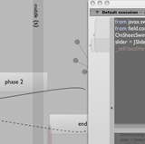Field is an
open-source development environment for digital art and experimental
code writing. Built around the needs of programmers that manipulate
images, make animations and compose music, Field seeks to tie
text-based programming with ad hoc visual metaphors. Field uses Python
and other programming languages and wants to be integrated into your
own personal code-base. And it comes with special support for the Processing environment. Field uses
JOGL for its UI and its built-in drawing system; it provides a
JOGL-based scene-graph library for 3D visualization.
|
|
MADLIX lets users insert
3D-content in web pages, blogs, Google pages, community presentations
and more. MADLIX is JOGL-powered and runs smoothly inside all
Java-enabled browsers, with no need for custom plug-ins or application
installation. The on-line gallery
features high-quality content ready for insertion. MADLIX is
accompanied by the MADLIX exporter tool enabling 3D artists to
directly export their 3D artwork from Autodesk Maya to the MADLIX
gallery. The exporter features pre-view functionality as well as a
standalone viewer, supporting the MADLIX file format and the open
standard file format COLLADA.
|
 Jake2 is a port
of id Software's GPL'd Quake II engine from C to Java done by bytonic software. You can run the game
via Java Web
Start with no manual installation on all of JOGL's
supported platforms. Jake2 is a port
of id Software's GPL'd Quake II engine from C to Java done by bytonic software. You can run the game
via Java Web
Start with no manual installation on all of JOGL's
supported platforms.
|
 Volume Viewer
is an open source renderer for 3D volumetric data. It provides tools for coloring your model,
cutting away pieces, and viewing it from any angle. It can cast shadows within the model for extra realism.
You can even upload your own volumetric data and view it in real time. Volume Viewer
is an open source renderer for 3D volumetric data. It provides tools for coloring your model,
cutting away pieces, and viewing it from any angle. It can cast shadows within the model for extra realism.
You can even upload your own volumetric data and view it in real time.
|
 The NetBeans OpenGL Pack provides an easy to use OpenGL development
environment integrated into NetBeans. It supplies modules like an GLSL
shader editor, hardware compiler/linker integration and tools for
displaying hardware information. The pack ships ready to run JOGL (JSR
231) demo projects and all OpenGL samples of the OpenGL Programming
Guide (also known as the Red Book).
The NetBeans OpenGL Pack provides an easy to use OpenGL development
environment integrated into NetBeans. It supplies modules like an GLSL
shader editor, hardware compiler/linker integration and tools for
displaying hardware information. The pack ships ready to run JOGL (JSR
231) demo projects and all OpenGL samples of the OpenGL Programming
Guide (also known as the Red Book).
|
 Insparia was created to help people
easily visualize, construct and track information about a 3d
environment online. Shape and texture importing as well as a robust
renderer will be available in the final commercial version. Insparia
uses JOGL to allow the user to construct and interact with their 3d
environment in real-time. Please note that Insparia is in alpha
testing. Feedback is appreciated.
Insparia was created to help people
easily visualize, construct and track information about a 3d
environment online. Shape and texture importing as well as a robust
renderer will be available in the final commercial version. Insparia
uses JOGL to allow the user to construct and interact with their 3d
environment in real-time. Please note that Insparia is in alpha
testing. Feedback is appreciated.
|
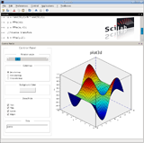
Scilab is a free scientific software
package for numerical computations providing a powerful open computing
environment for engineering and scientific applications. It has
sophisticated data structures, an interpreter and a high level
programming language. It also integrates a 2-D and 3-D plotting module
designed to visually represent and understand complex data. Fully
integrated within the Scilab's Swing UI, the plotting module is based
on JOGL, allowing it to take advantage of the OpenGL accelerated
graphics.
|
|
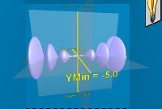
OneStone® Pebbles are a new series of calculus visualization tools developed
by Bright Ideas Software®.
Designed from the ground up with input from
education professionals, these unique tools meld current educational
theory with state of the art graphics technology in consistent,
easy-to-use packages. Each 'Pebble' in the series is a stand-alone
program designed to illustrate a specific topic in the calculus
syllabus. While the topic of each Pebble is different, the experience
of using each remains as constant as possible, and features several
elements identified as contributing to the development of a deeper
understanding of dynamic covariant relationships. The Pebbles use JOGL
for their interactive 3D rendering. Try the
Curve Families and
Surfaces of Revolution examples!
|
 jReality is an open-source,
full-featured 3D scene graph package designed for but not limited to
mathematical visualization. It provides several backends, including a
JOGL one; it is thread-safe; it has a flexible shading model based on
an attribute-inheritance mechanism in the scene graph;
device-independent user interaction; support for true 3D audio; many
support classes for transformations and geometry; a plugin system for
assembling custom viewers; an active forum
and a growing set
of tutorial examples to help developers interested in using
jReality to solve their 3D problems.
jReality is an open-source,
full-featured 3D scene graph package designed for but not limited to
mathematical visualization. It provides several backends, including a
JOGL one; it is thread-safe; it has a flexible shading model based on
an attribute-inheritance mechanism in the scene graph;
device-independent user interaction; support for true 3D audio; many
support classes for transformations and geometry; a plugin system for
assembling custom viewers; an active forum
and a growing set
of tutorial examples to help developers interested in using
jReality to solve their 3D problems.
|
|
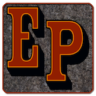
Everplanes is a game of exploration, building, survival and strategy.
It introduces new gameplay, resources and challenges in the updates.
Each time the game is started, it automatically downloads the latest updates.
The game includes a built-in server for LAN or Internet play.
You can run an open server, or configure various levels of access control.
Everplanes features a built-in server browser and also includes global chat facility.
Everplanes is available for Mac OS X 10.4+, Windows XP/Vista/7 and Linux.
|
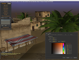
The Elflight Engine is a games engine designed for the web.
It supports hardware accelerated 3D games and applications in a web browser,
with the ability to import assets from major 3D packages such as Maya and 3D Studio.
The focus of the engine's architecture is minimal startup time, fast streaming, local
caching and collaborative real-time editing. The Elflight Engine is multi-user and so
lends itself to the development of virtual worlds and MMOs.
|
|
RaceView from NASCAR / NEXTEL, part of the TrackPass package, puts
you in the race. Control the virtual camera angle, listen to the
driver and team, and see crucial statistics and times, all in real
time as the race goes on. RaceView uses JOGL for its 3D rendering.
|
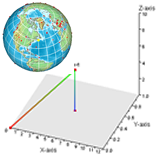
ZG3D is an open source project that uses
JOGL for visualizing 3D geometries with the emphasis of plotting
scientific data in a web application. Geometry objects in an XML file
or string can be dynamically loaded and removed. An HTML document may
call ZG3D functions through JavaScript and may define JavaScript
functions to receive messages from ZG3D, which makes it very easy and
flexible to embed interactive 3D web visualization. The software is
developed at the Center for Global
Environmental Research, Japan, for the advanced data visualization
of the Global Greenhouse Gases Database.
|
 The Fusion Framework enables Swing
components to be extended with 3D content via JOGL. In general the 3D
content will show up in layers on top of the corresponding Swing
component. Many utility functions are integrated to help the developer
build components. For example, the 3D content may be calibrated to the
corresponding component's bounds. In addition, the system provides a
simple scenegraph, Swing-like mouse interaction, and low-level
animation support, as well as GLSL shaders and .obj file loading. The
demo page contains several Java Web Start applications which
demonstrate the abilities of the framework; please fill out the web
form to help evaluate the components' usefulness. The Fusion Framework enables Swing
components to be extended with 3D content via JOGL. In general the 3D
content will show up in layers on top of the corresponding Swing
component. Many utility functions are integrated to help the developer
build components. For example, the 3D content may be calibrated to the
corresponding component's bounds. In addition, the system provides a
simple scenegraph, Swing-like mouse interaction, and low-level
animation support, as well as GLSL shaders and .obj file loading. The
demo page contains several Java Web Start applications which
demonstrate the abilities of the framework; please fill out the web
form to help evaluate the components' usefulness.
|
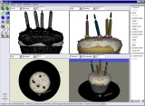
Art of Illusion is a free, open source 3D modelling and rendering
studio. Many of its capabilities rival those found in commercial
programs. Some of the highlights include subdivision surface based
modelling tools, skeleton based animation, and a graphical language
for designing procedural textures and materials. It uses JOGL for
real-time OpenGL rendering in its modeling views.
|
 Avengina is a
realtime 3D graphics engine which is designed for the execution as a
Java applet. Alternatively it can be launched as a Java Webstart
application outside the browserwindow. The software provides the
possibility to exhibit texts and images in virtual
galleries. Regarding the control and behaviour of the avatar it's
redolent of a game engine. The graphics rendering system bases on
per-pixel lighting and supports normal mapping, specular lighting and
stencil volume shadows. Avengina uses JOGL for realtime rendering. Avengina is a
realtime 3D graphics engine which is designed for the execution as a
Java applet. Alternatively it can be launched as a Java Webstart
application outside the browserwindow. The software provides the
possibility to exhibit texts and images in virtual
galleries. Regarding the control and behaviour of the avatar it's
redolent of a game engine. The graphics rendering system bases on
per-pixel lighting and supports normal mapping, specular lighting and
stencil volume shadows. Avengina uses JOGL for realtime rendering.
|
 chronotext is a series
of visual design experiments involving animated text and 3D objects
and surfaces. Several examples can be run on-line via Java Web
Start. See the latest
experiments of mapping text on to real 3D surfaces.
chronotext is a series
of visual design experiments involving animated text and 3D objects
and surfaces. Several examples can be run on-line via Java Web
Start. See the latest
experiments of mapping text on to real 3D surfaces.
|
|
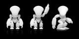
Sculpteo offers a 3D printing service, fast and available for everyone.
Starting from a 3D design, Sculpteo makes a specific object : interior decoration, characters, robots, miniatures, models, mechanic objects...
|
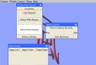
FengGUI is a graphical
user interface (GUI) application programming interface (API) based on
OpenGL. FengGUI provides all typical GUI components like buttons,
sliders, trees, text areas, frames, tabs, etc. which are required to
build a complete GUI system. Since it is based on OpenGL, FengGUI fits
well in multimedia and game environments.
|
 GL Studio is an object oriented rapid application
development tool that allows a user to graphically combine
photographs, 3D models and behavior logic to create advanced 2D and 3D
human machine interfaces. GL Studio generates Java or C++ source code
which can then be integrated into the user’s application as a user
interface. Java
code generated with GL Studio can be deployed using
javax.swing.JPanel, java.awt.Canvas and JavaBeans. GL Studio uses
OpenGL for rendering and GL Studio for Java uses the JOGL API.
GL Studio is an object oriented rapid application
development tool that allows a user to graphically combine
photographs, 3D models and behavior logic to create advanced 2D and 3D
human machine interfaces. GL Studio generates Java or C++ source code
which can then be integrated into the user’s application as a user
interface. Java
code generated with GL Studio can be deployed using
javax.swing.JPanel, java.awt.Canvas and JavaBeans. GL Studio uses
OpenGL for rendering and GL Studio for Java uses the JOGL API.
|
 Impact is a
complete finite element suite including preprocessor, solver and
postprocessor which is useable for simulating dynamic events such as
car crashes or stamping of metal sheets. The suite allows 3D
modelling, solving and viewing of simulation results, all in OpenGL
accelerated graphics through the use of JOGL.
Impact is a
complete finite element suite including preprocessor, solver and
postprocessor which is useable for simulating dynamic events such as
car crashes or stamping of metal sheets. The suite allows 3D
modelling, solving and viewing of simulation results, all in OpenGL
accelerated graphics through the use of JOGL.
|
 Jzy3d
stands for Java Easy 3d, and allows a rapid display of 3d scientific data. User can define z=f(x,y) functions
binded to (customizable) colormaps, as well as rendering predefined simple 3d shapes programmaticaly or from csv files.
One can moreover add pre/post renderers for adding java2d layers to the 3d scene.
Jzy3d provides a simple bridge to AWT, SWT, or Swing, and has already been integrated with success in Eclipse RCP and Swing
professionnal applications by the company MASA Group. The API has been written with the goal to hide the burden of working with
OpenGL, 3d polygon ordering and transparency management.
Jzy3d
stands for Java Easy 3d, and allows a rapid display of 3d scientific data. User can define z=f(x,y) functions
binded to (customizable) colormaps, as well as rendering predefined simple 3d shapes programmaticaly or from csv files.
One can moreover add pre/post renderers for adding java2d layers to the 3d scene.
Jzy3d provides a simple bridge to AWT, SWT, or Swing, and has already been integrated with success in Eclipse RCP and Swing
professionnal applications by the company MASA Group. The API has been written with the goal to hide the burden of working with
OpenGL, 3d polygon ordering and transparency management.
|
 The
Molecular Biology Toolkit is a
Java-based protein visualization and analysis toolkit. The toolkit
provides classes for efficiently loading, managing and manipulating
protein structure and sequence data. The MBT also provides a rich set
of graphical 3D and 2D visualization components which can be easily
"plugged together" to produce applications having sophisticated
graphical user interfaces. Some MBT-based visualization tools are ProteinWorkshop (webstart
demo), EpitopeViewer
(webstart demo), and Sirius. The
Molecular Biology Toolkit is a
Java-based protein visualization and analysis toolkit. The toolkit
provides classes for efficiently loading, managing and manipulating
protein structure and sequence data. The MBT also provides a rich set
of graphical 3D and 2D visualization components which can be easily
"plugged together" to produce applications having sophisticated
graphical user interfaces. Some MBT-based visualization tools are ProteinWorkshop (webstart
demo), EpitopeViewer
(webstart demo), and Sirius.
|
 Processing is an open
source programming language and environment for people who want to
program images, animation, and sound. It is used by students, artists,
designers, architects, researchers, and hobbyists for learning,
prototyping, and production. Processing is developed by artists and
designers as an alternative to proprietary software tools in the same
domain. It uses JOGL for its hardware accelerated 3D rendering
support.
Processing is an open
source programming language and environment for people who want to
program images, animation, and sound. It is used by students, artists,
designers, architects, researchers, and hobbyists for learning,
prototyping, and production. Processing is developed by artists and
designers as an alternative to proprietary software tools in the same
domain. It uses JOGL for its hardware accelerated 3D rendering
support.
|
 SpeckSim is a
behaviour-level simulator for networks of small, resource-constrained
devices with sensing, computation and communication
capabilities. Intended as a testbed for distributed algorithms, the
main design goal was ease of extension. To this end, almost all aspect
of the simulator can be customised: Node behaviour, communication
characteristics, placement and motion; visualisation rendering and
interaction and statistic generation.
SpeckSim is a
behaviour-level simulator for networks of small, resource-constrained
devices with sensing, computation and communication
capabilities. Intended as a testbed for distributed algorithms, the
main design goal was ease of extension. To this end, almost all aspect
of the simulator can be customised: Node behaviour, communication
characteristics, placement and motion; visualisation rendering and
interaction and statistic generation.
|
 With STRAP you can align your proteins by
sequence and 3D-structure. STRAP simultaneously displays
3d-structures, amino acid sequence alignment and nucleotide sequences.
It has powerful annotation features.
With STRAP you can align your proteins by
sequence and 3D-structure. STRAP simultaneously displays
3d-structures, amino acid sequence alignment and nucleotide sequences.
It has powerful annotation features.
|
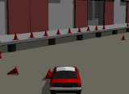Vehicle Dynamics Engine Demo
is a Java Web Start demonstration of a 3D physics engine developed by
Insight Machines. The
engine is designed especially for car games. The demo uses JOGL and
employs such techniques like shadow casting using the stencil buffer.
|
 GEF3D is an Eclipse GEF extension bringing 3D to diagram editing.
That is with GEF3D you can create 3D diagrams, 2D diagrams and combine
3D with 2D diagrams. GEF3D extends GEF by providing 3D enabled draw and
controller classes. Instead of drawing 2D figures, you can now draw 3D figures.
Existing GEF-based 2D editors can be embedded into 3D editors with minimal effort.
GEF3D is an Eclipse GEF extension bringing 3D to diagram editing.
That is with GEF3D you can create 3D diagrams, 2D diagrams and combine
3D with 2D diagrams. GEF3D extends GEF by providing 3D enabled draw and
controller classes. Instead of drawing 2D figures, you can now draw 3D figures.
Existing GEF-based 2D editors can be embedded into 3D editors with minimal effort.
|
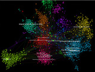
Gephi is a visualization and exploration
platform for all kinds of networks and complex systems,
dynamic and hierarchical graphs.
|
 VLDocking is
a set of Java components that helps the Swing developer to build
applications with Docking capabilities, and even raise existing
applications to higher standards. It supports docking via drag and
drop, enhanced toolbars, closable tabs, and more. It fully supports
heavyweight components such as JOGL's GLCanvas in a docking
environment. VLDocking is
a set of Java components that helps the Swing developer to build
applications with Docking capabilities, and even raise existing
applications to higher standards. It supports docking via drag and
drop, enhanced toolbars, closable tabs, and more. It fully supports
heavyweight components such as JOGL's GLCanvas in a docking
environment.
|


{kind=link}